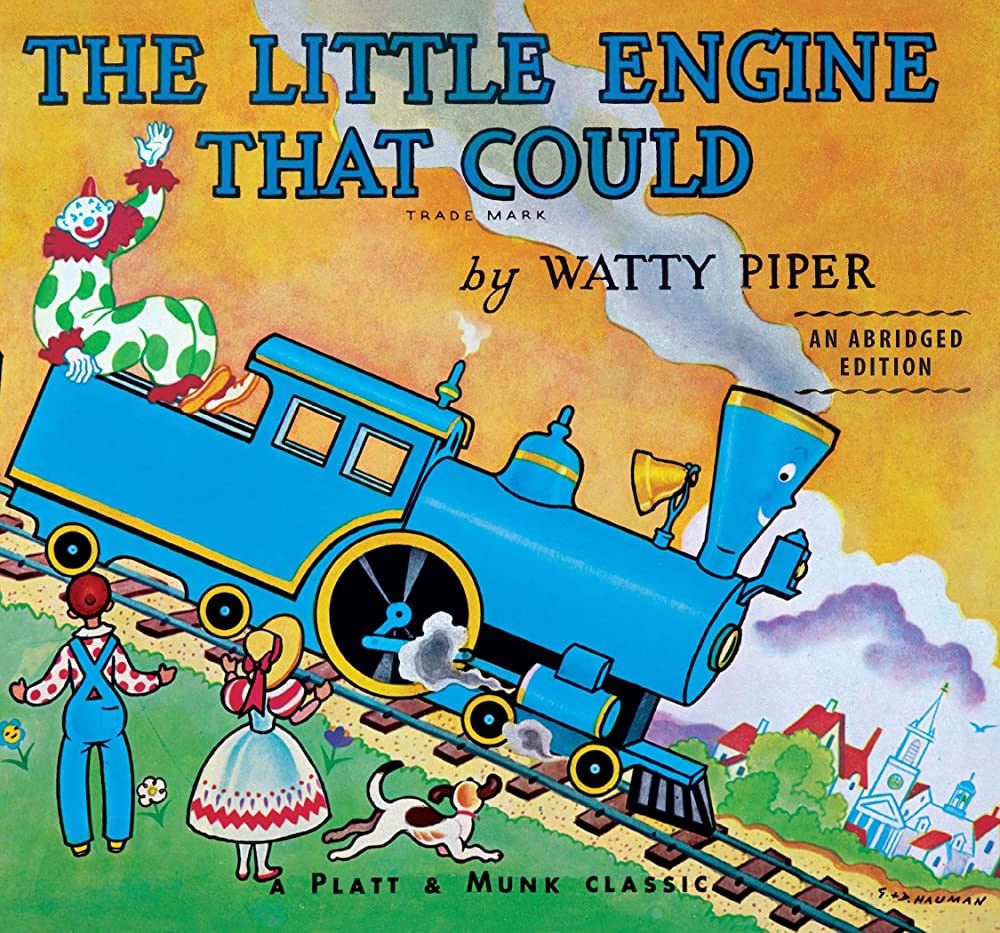
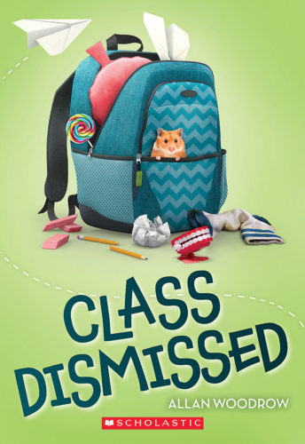
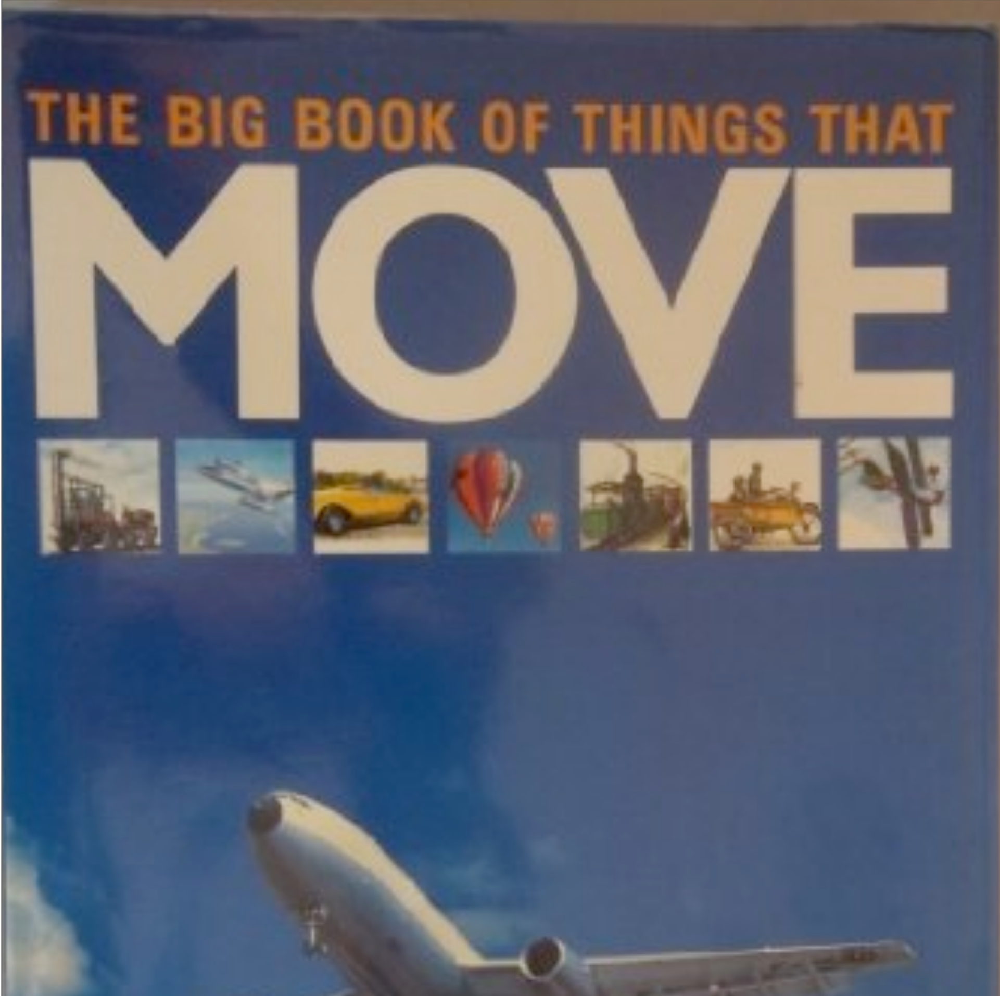
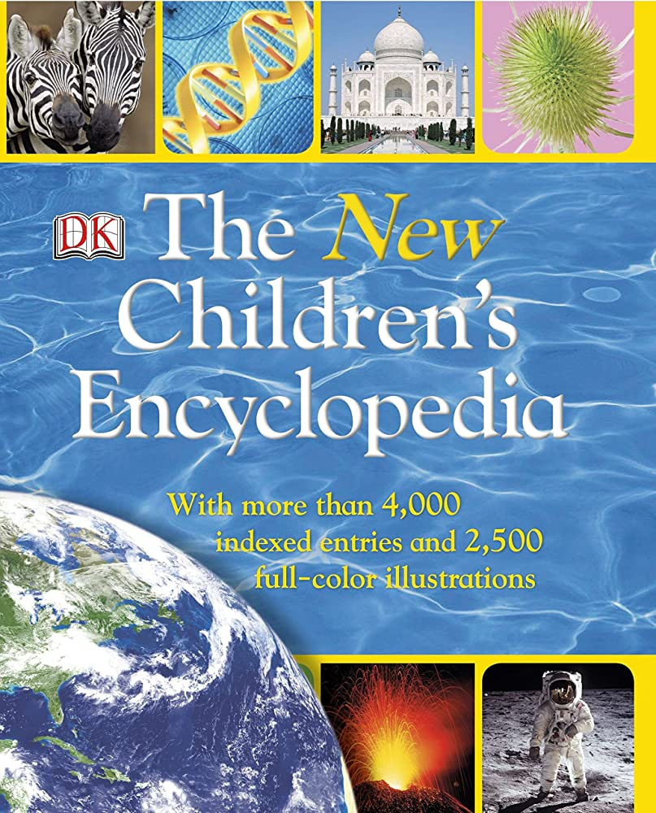
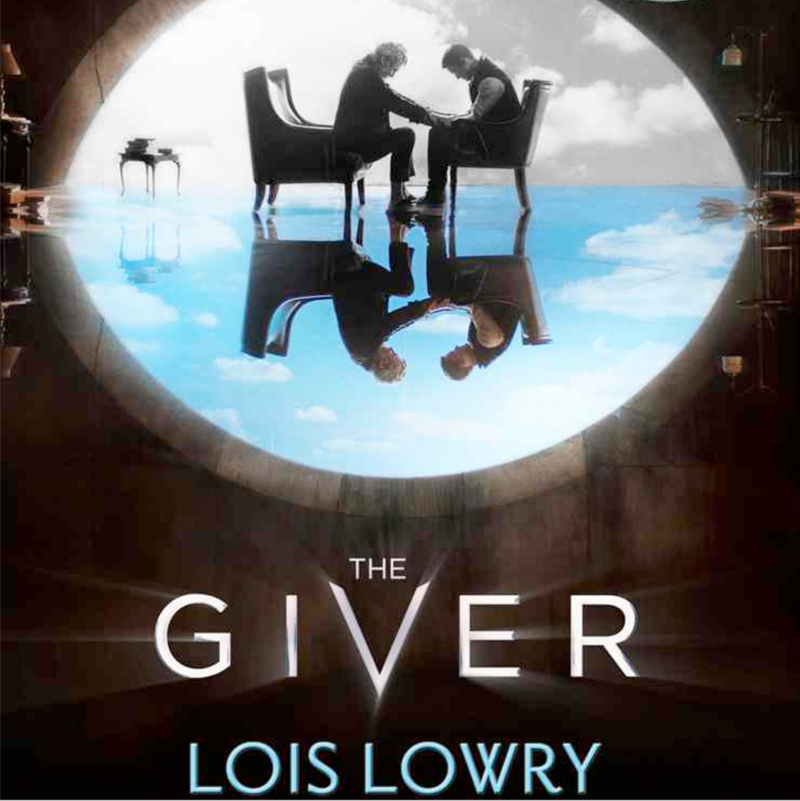

The Little Engine That Could is truly inspiring. It is a tale of perseverance, optimism, and hard work while also perhaps hiding a story of the good Samaritan. A train, responsible for delivering toys to children, breaks down. Multiple big and strong trains pass, but none are willing to help. Eventually, the Little Engine comes along. They don’t seem as capable as the other engines, but through their optimism, they decide to give it a go. The little engine perseveres, and gets the job done, a gripping story, told in a way understandable by all ages, making it one of my favorite children’s books.
1. The Little Engine That Could
2. Diary of a Wimpy Kid

Class Dismissed Class Dismissed is a book filled with character development, yet still fit for a young reader. It tells the surprisingly compelling story of a 5th grade classroom, which has become teacherless after a mix up. The 5th graders decide to keep this a secret, and as the school year unfolds, more and more problems arise, calling for new characters to develop, or change their ways. I read this even recently, and can appreciate the character development even now, while still being immersed in the book. I believe Class Dismissed is an underrated gem.
3. Class Dismissed

The Big Book of Transportation was my introduction to non-fiction, as I had an obsession with trains when I was younger. I wanted to see pictures of trains, especially steam trains. This is one of the reasons I picked up this book at first. Even though the book was above my reading level for the time, I worked through readings I was interested in, mainly the ones about steam trains. Even if I didn’t comprehend all the reading, this was a great introduction to nonfiction for me.
4. The Big Book of Transportation

By this time, my desire for knowledge had expanded past that of transportation. One of the greatest examples of that is The Children’s Encyclopedia, by Discovery Kids. This book also led me to like non-fiction. I learned some surface level knowledge about astronomy, geography, biology, culture, history, politics, and science, all in one book! Even though it is packed with information, the book is still short, yet easy to understand. The entire book is less than 300 pages, while still being understandable by someone around 10 years old.
5. The Children's Encyclopedia

6. Chronicles of Narnia
7. The Martian

The Giver is not like any other book I have read. It doesn’t have a clear genre. It’s a little bit of philosophy, some dystopian elements, and some have even called it a mystery genre. It is also a book that makes you think. Booklist says it best: “The simplicity and directness of Lowry's writing force readers to grapple with their own thoughts.” The book is also short and sweet, less than 250 pages, which kept me engaged the whole way through, it was a breath of fresh air from other fiction books. I’m glad I read something unique and different, and ended up finding a book I liked, and I’ll do so again in the future.